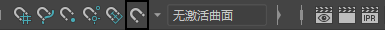
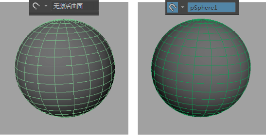
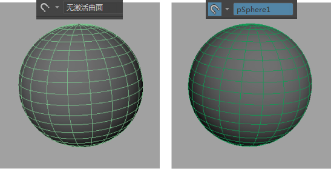

设置激活的曲面的步骤
- 在场景中选择一个对象。
- 执行下列操作之一：
- 在该对象上单击鼠标右键，然后从弹出菜单中选择“激活”(Make Live)。
- 在“状态行”(Status Line)中选择“激活”(Make Live)图标。

- 选择“修改 > 激活”(Modify > Make Live)。
选定的对象将成为激活的曲面，其名称将显示在“状态行”(Status Line)中的“激活”(Make Live)图标
 旁边。激活的曲面的线框颜色为深绿色，但它只在启用“线框”(Wireframe)或“着色对象上的线框”(Wireframe on Shaded)模式时显示。

旁边。激活的曲面的线框颜色为深绿色，但它只在启用“线框”(Wireframe)或“着色对象上的线框”(Wireframe on Shaded)模式时显示。

交换激活的曲面的步骤
- 单击“激活”(Make Live)图标 () 旁边的下拉按钮，然后从弹出菜单中选择之前的激活曲面。
快速启用和禁用最新的激活曲面
- 使用鼠标中键单击“激活”(Make Live)图标 () 或弹出菜单。